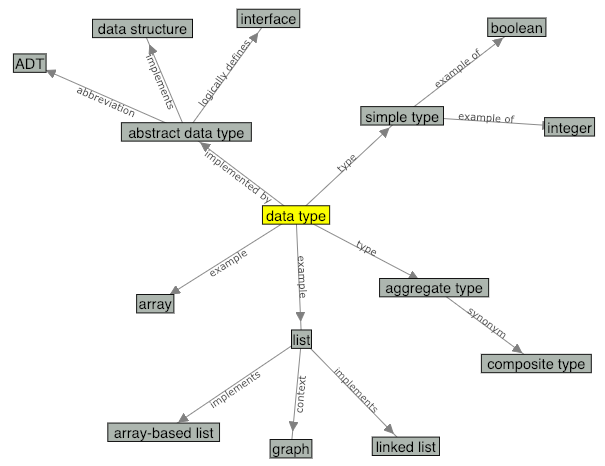

This is a still image of the concept map for the term "data
type". You can check the actual concept map on the glossary
page.

An array-based list is an implementation of a(n) ______
Look at these terms on the concept map.